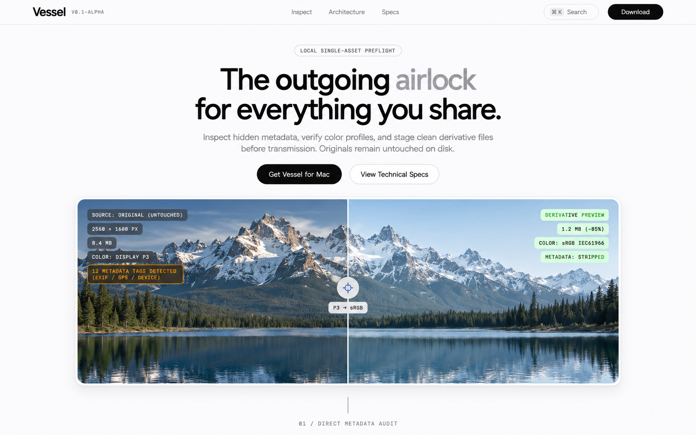
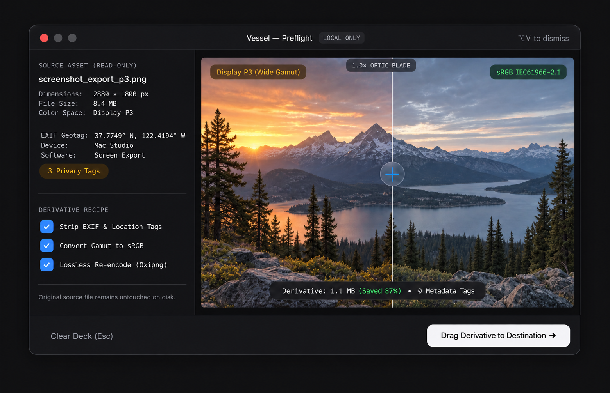
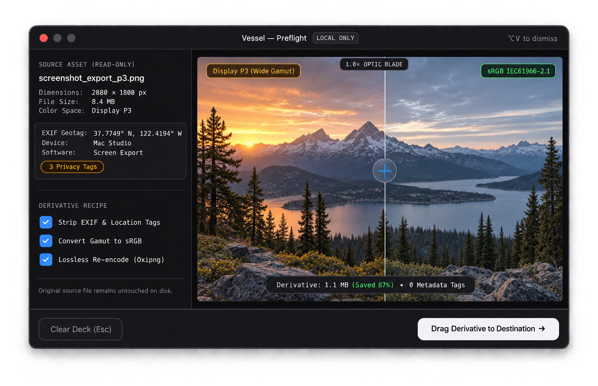

Header + Hero · Less borders
Badge และ telemetry ใช้ tint/opacity แทน outline ที่ไม่จำเป็น
เปิดภาพเต็ม ↗ภาพดิบสำหรับตัดสิน composition และ visual language ก่อนเขียน frontend แตะ “เปิดภาพเต็ม” เพื่อ pinch-zoom บนโทรศัพท์
Badge และ telemetry ใช้ tint/opacity แทน outline ที่ไม่จำเป็น
เปิดภาพเต็ม ↗

Facts, status และ secondary action ใช้ spacing/tint แทนกรอบซ้ำ
เปิดภาพเต็ม ↗